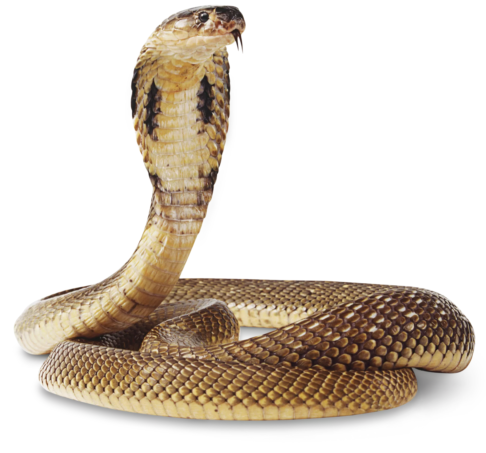

i played too much video games as a kid, and this led to me studying computer science.
Try guessing who is who
it do be like that sometimes
I spend most of my free time online, consuming content from mostly American sources. So despite living most of my life in Taiwan, I don't feel patriculuarly in touch with my own culture.
Anemoia - n. nostalgia for a time you've never known
I like learning about stuff. School is supposed to be a place of learning. Seems like I'm in the right place.
generated by Pitt Fuego
"Don't Panic"